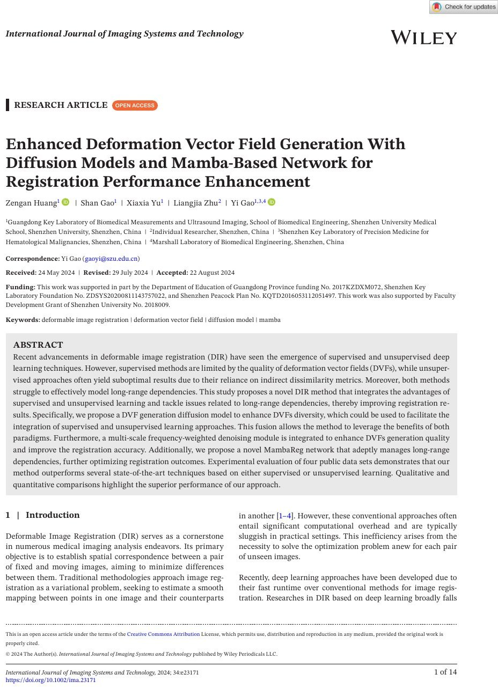
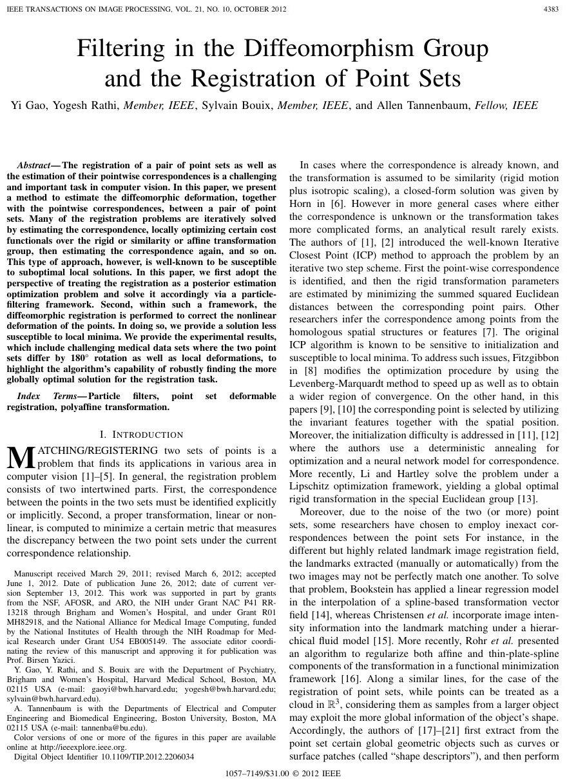
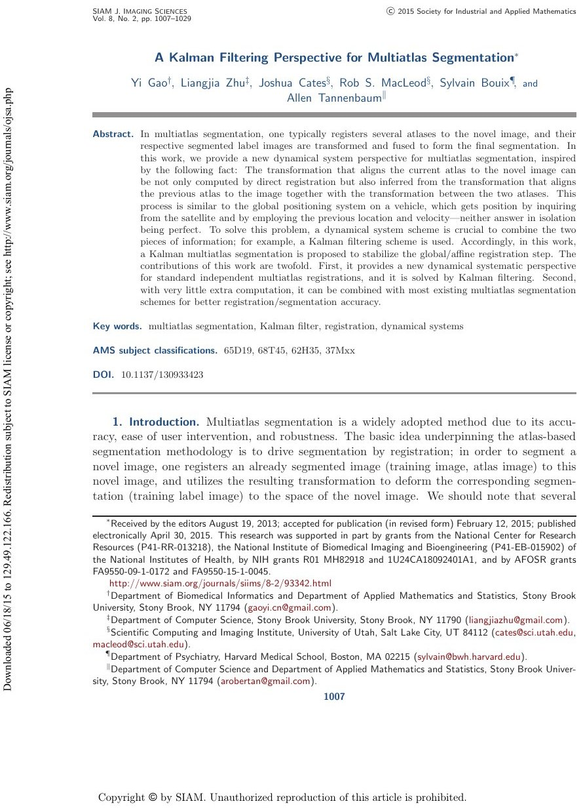

综述
从理论到生成式模型的配准研究：微分同胚群滤波、多图谱融合的卡尔曼视角，以及扩散模型与 Mamba 网络的形变向量场生成。
- 扩散 + Mamba 网络生成形变向量场（IJIST 2024）
- 微分同胚群中的点集配准（IEEE TIP 2012）
- 多图谱分割的卡尔曼滤波视角（SIAM 2015）
04 · 代表工作
代表工作
每张卡片：上方配图，下方要点。
01

Enhanced Deformation Vector Field Generation With Diffusion Models and Mamba Based Network for Registration Performance Enhancement
International Journal of Imaging Systems and Technology · 2024
- 扩散模型与 Mamba 网络生成形变向量场。
- 配准性能获得可测提升。
02

Filtering in the diffeomorphism group and the registration of point sets
IEEE Transactions on Image Processing · 2012
- 微分同胚群中的滤波方法用于点集配准。
- 为光滑可逆变换提供理论基础。
03

A Kalman filtering perspective for multi-atlas segmentation
SIAM Journal on Imaging Sciences · 2015
- 将多图谱分割表述为卡尔曼滤波问题。
- 有原则的图谱标签传播融合。
04

Successive Convex Optimization for Point Set Registration
IEEE ISBI · 2014
- 逐次凸优化的非刚性点集配准。
- 高效求解并保证收敛。